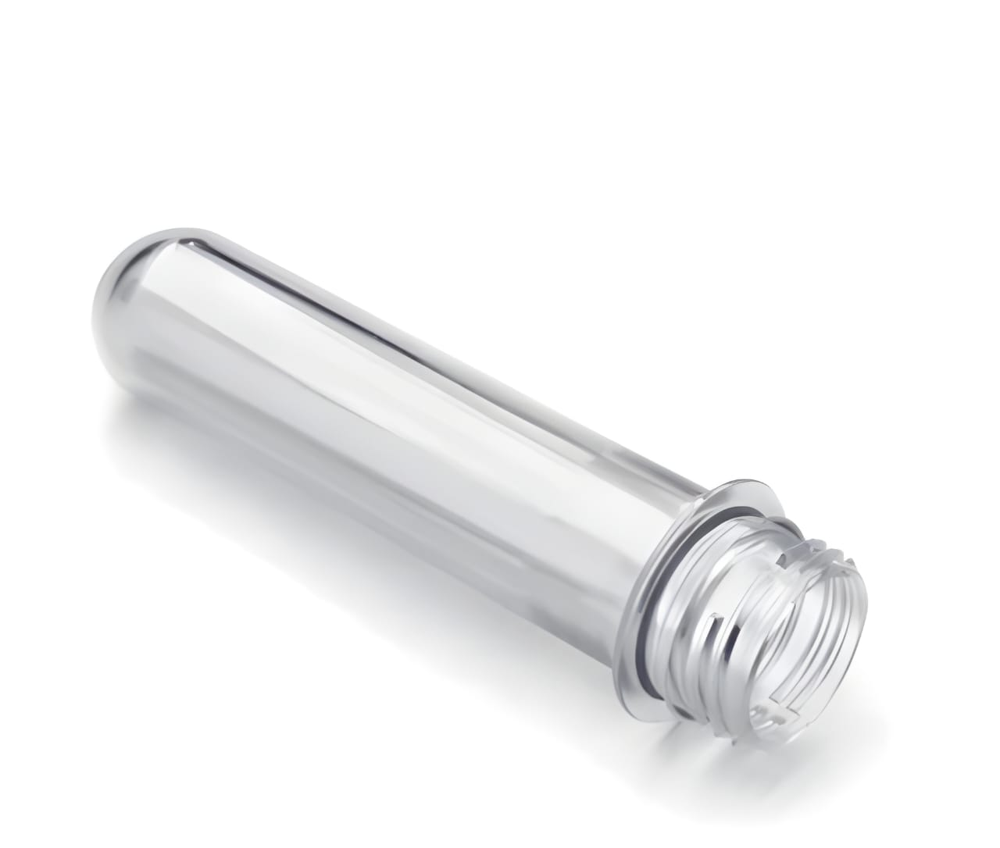

ABOUT THE FACTORY

Welcome to Royal Pet, situated in the vibrant city of Lucknow, where excellence in pet preform manufacturing takes center stage. Owned and spearheaded by Harshdeep Singh, Royal Pet is your premier destination for a wide array of PET preform bottles, meticulously crafted to perfection.
At Royal Pet, our dedication to quality permeates every aspect of our operation. From the careful selection of materials to the implementation of cutting-edge manufacturing processes, we ensure that each preform that leaves our facility meets the highest standards of excellence.
Our team comprises skilled professionals who are passionate about their craft, guaranteeing that every product bearing the Royal Pet name reflects the superior quality and reliability that we're renowned for.
With an unwavering focus on innovation and customer satisfaction, we continuously strive to exceed expectations in pet preform manufacturing. Whether you're in the beverage, pharmaceutical, or any other industry requiring PET packaging solutions, Royal Pet stands ready to be your trusted partner.
Experience the Royal Pet difference – partner with us for all your packaging needs, and discover excellence, reliability, and innovation at every turn.